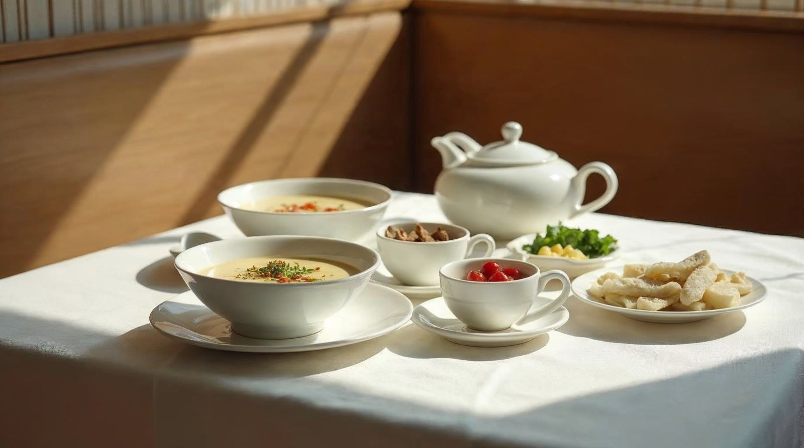
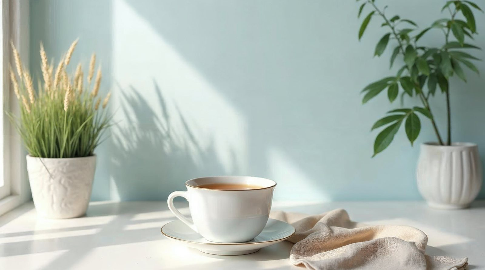

이종호 한의사 감수좋은꿈참사랑한의원 대표원장 (한의사 면허번호 19769)발행 2026-11-26 · 수정 2026-11-26
이 글의 차례
회사 근처 식당에서 점심을 먹고 막 일어서려는데 아랫배가 꾸르륵 신호를 보냅니다. 계산을 서둘러 마치고 건물 화장실로 종종걸음을 칩니다. 동료들과 커피 한잔하자는 말에 웃으며 고개를 끄덕이면서도, 머릿속으로는 가장 가까운 화장실이 어디인지부터 떠올립니다.
이런 일이 매 끼니, 특히 아침이나 점심 식사 뒤마다 되풀이되면 식사 자체가 부담스러워집니다. 중요한 약속이 있는 날에는 일부러 밥을 거르거나, 외식 장소를 고를 때 화장실 위치부터 확인하게 됩니다. 진료실에서 이 이야기를 꺼내시는 분들은 대개 꽤 오래 혼자 참아 오신 경우가 많습니다.
먼저 안심하셔도 되는 부분이 있습니다. 밥을 먹으면 장이 움직이기 시작하는 것은 누구에게나 있는 자연스러운 반응입니다. 다만 그 반응이 유난히 크고 빨라서 생활을 불편하게 만든다면, 몸이 왜 그렇게 반응하는지 함께 살펴볼 만합니다.
식후 급한 변의는 어떤 모습인가요
가장 흔한 모습은 식사를 시작하고 몇 분에서 30분 사이에 아랫배가 꾸르륵거리며 변의가 몰려오는 것입니다. 아침 첫 끼니나 커피와 함께한 식사 뒤에 특히 강하고, 기름지거나 매운 음식, 찬 음료를 곁들였을 때 더 급해집니다.
변의 모양은 사람마다 다릅니다. 평소와 같은 변을 보는데 시간만 급한 분도 있고, 식후에만 묽은 변을 보는 분도 있습니다. 한 번 화장실을 다녀오면 개운해지는 분이 있는 반면, 한 끼에 두세 번 다녀와야 하는 분도 있습니다.
배의 통증은 거의 없거나 살살 아픈 정도인 경우가 많습니다. 변을 보고 나면 배가 편해지고, 다음 끼니까지는 별일 없이 지내다가 다시 밥을 먹으면 같은 흐름이 되풀이됩니다.
왜 밥을 먹으면 장이 바로 움직일까요
음식이 위에 들어오면 위가 늘어나면서 장에 "이제 새 음식이 들어오니 앞의 것을 내보낼 준비를 하라"는 신호를 보냅니다. 이를 위대장 반사라고 부릅니다. 덕분에 장은 오래 머물던 내용물을 아래로 밀어내고 새 음식이 지나갈 자리를 만듭니다.
이 반사는 누구에게나 있지만 세기가 사람마다 다릅니다. 장이 예민한 분은 같은 신호에도 크게 반응해서 식사 직후 강한 변의를 느낍니다. 특히 아침에는 밤새 쉬던 장이 깨어나면서 이 반사가 가장 강하게 나타나, 아침 식사 뒤가 가장 급하다는 분이 많습니다.
반사를 키우는 요인도 있습니다. 한꺼번에 많이 먹거나 빨리 먹으면 위가 갑자기 크게 늘어나 신호가 세집니다. 기름진 음식, 커피, 찬 음료, 매운 음식, 술은 장을 직접 자극해 움직임을 더 빠르게 합니다.
긴장과 잠도 큰 몫을 합니다. 장은 마음의 상태에 예민하게 반응하는 기관이어서, 출근 전이나 중요한 일을 앞둔 식사 뒤에 더 급해지는 분이 흔합니다. 잠을 설친 다음 날 아침에 유난히 심했다는 이야기도 자주 듣습니다.
한의학에서는 이런 몸을 속이 차고 비위가 약해 음식을 잘 데우고 머금지 못하는 상태, 혹은 긴장이 장의 움직임을 재촉하는 상태로 나누어 봅니다. 앞의 경우는 배가 차고 묽은 변이 잦으며, 뒤의 경우는 신경 쓸 일이 있을 때 확 심해지는 것이 특징입니다.
과민성 장, 아침 설사형과는 어떻게 다른가요
설사형 과민성 장은 배의 통증이나 불편감이 반복되고, 그 불편이 변을 보면 나아지는 흐름이 몇 달 이상 이어지는 것이 특징입니다. 식후 급한 변의는 과민성 장의 한 모습으로 나타나기도 하지만, 통증 없이 변의만 급한 경우도 많아서 함께 구분해 봅니다.
아침마다 눈을 뜨자마자 화장실로 달려가는 흐름은 식사와 상관없이 기상과 함께 오는 경우가 많습니다. 식사를 한 뒤에만 신호가 오는지, 일어나자마자 오는지를 나누어 말씀해 주시면 살피는 방향을 정하는 데 도움이 됩니다.
기름진 음식을 먹은 뒤에만 설사를 한다면 쓸개를 떼어 낸 수술 이력이나 췌장 쪽 문제도 함께 생각해야 합니다. 변이 기름지고 물에 뜨며 냄새가 강하거나 체중이 줄어든다면 내과 검사를 먼저 권합니다.
식후 급한 변의를 겪는 분들이 자주 헷갈리는 것
첫째, 화장실이 급해질까 봐 밥을 거르는 습관입니다. 끼니를 거르면 다음 식사 때 한꺼번에 많이 먹게 되고, 위가 갑자기 크게 늘어나 반사가 더 세집니다. 오히려 양을 줄여 자주 드시는 쪽이 장을 덜 놀라게 합니다.
둘째, 식후에 화장실에 가는 것을 곧바로 병으로 여기는 생각입니다. 식사 뒤 변을 보는 것 자체는 몸의 자연스러운 흐름입니다. 시간이 급해 생활이 불편하거나 변이 늘 무르다면 살펴볼 일이지, 식후 배변 자체를 걱정하실 필요는 없습니다.
셋째, 커피는 소화를 돕는다는 생각입니다. 식후 커피 한 잔이 습관인 분이 많은데, 커피는 장의 움직임을 크게 늘리는 대표적인 음료입니다. 식후 급한 변의가 있다면 식사 직후 커피부터 잠시 미뤄 보시길 권합니다.
계절과 생활 리듬에 따라 달라지는 신호
여름에는 찬 음료와 냉방 때문에, 겨울에는 몸이 차가워지면서 식후 변의가 더 급해진다는 분이 많습니다. 계절이 바뀌는 무렵에 유난히 흔들린다면 배를 따뜻하게 지키는 습관과 따뜻한 첫 숟가락을 미리 챙겨 두시면 좋습니다.
끼니 시각이 들쑥날쑥한 생활도 신호를 키웁니다. 아침을 거르고 점심에 몰아서 먹거나, 늦은 밤에 하루 첫 끼를 제대로 먹는 생활이 이어지면 장이 언제 움직여야 할지 몰라 한꺼번에 크게 반응하기 쉽습니다. 끼니 시각을 대략이라도 맞춰 보세요.
시험 기간이나 이직, 이사처럼 생활이 크게 바뀌는 시기에 시작되었다는 분도 많습니다. 이런 경우에는 장만 볼 것이 아니라 그 시기의 마음과 잠을 함께 살피는 것이 도움이 될 수 있습니다.
먼저 이렇게 여쭙니다
처음 오시면 저는 대략 이런 순서로 여쭙니다. 미리 떠올려 오시면 이야기가 훨씬 수월해집니다.
- 식사를 시작하고 몇 분쯤 지나 신호가 오나요?
- 아침, 점심, 저녁 가운데 어느 끼니에 가장 심한가요?
- 변의 모양은 평소와 같나요, 묽어지나요?
- 배의 통증이나 더부룩함, 가스가 함께 있나요?
- 커피, 찬 음료, 기름진 음식, 술과의 관련이 느껴지나요?
- 긴장되는 일이 있거나 잠을 설친 날 더 심해지나요?
이 대답들을 맥과 혀, 배의 온도와 긴장감과 함께 놓고 보면 속이 차고 약한 쪽인지, 긴장이 장을 재촉하는 쪽인지, 먼저 내과 검사가 필요한 쪽인지가 조금씩 나뉩니다.
일상에서 먼저 해 볼 수 있는 것
식후 급한 변의는 먹는 방법만 바꿔도 꽤 달라지는 경우가 많습니다. 한꺼번에 바꾸기보다 하나씩 골라 2주 정도 이어 보세요.
- 한 끼 양을 조금 줄이고, 대신 간단한 간식으로 나누어 드시기
- 숟가락을 자주 내려놓으며 20분 이상 천천히 드시기
- 식사 직후 커피와 찬 음료는 잠시 미루기
- 기름진 튀김과 매운 국물은 중요한 일정이 있는 날 피하기
- 아침 식사는 따뜻하고 부드러운 음식으로 시작하기
- 식사 뒤 바로 서두르기보다 5분 정도 앉아 숨 고르기
아침이 가장 급한 분은 출근 전 시간을 조금 넉넉히 잡아 보세요. 일어나 따뜻한 물 한 잔을 마시고, 아침을 먹은 뒤 집에서 화장실을 다녀올 여유를 두면 출근길 지하철에서 진땀 흘릴 일이 줄어듭니다.
긴장할 때 심해지는 분은 식사 전에 숨을 길게 내쉬는 호흡을 몇 차례 해 보세요. 들이쉬는 숨보다 내쉬는 숨을 조금 길게 하는 것만으로도 배에 들어간 힘이 풀리면서 장이 덜 놀라는 느낌을 받으시는 분이 많습니다.
식사 뒤 가볍게 걷는 것도 좋습니다. 배부른 채로 바로 눕거나 책상 앞에 웅크리고 앉기보다, 10분 정도 천천히 걸으며 숨을 고르면 장의 움직임이 한결 고르게 이어집니다.
배를 따뜻하게 지키는 것도 도움이 될 수 있습니다. 에어컨 아래나 찬 바람이 드는 자리에서 식사할 때는 얇은 겉옷을 걸치고, 배와 허리를 차게 하지 않도록 신경 써 주세요.
어떤 음식이 편하고 어떤 음식이 급하게 할까요
장이 예민한 시기에는 흰쌀밥이나 죽, 잘 익힌 뿌리채소, 두부, 달걀, 흰살생선처럼 부드럽고 익힌 음식이 대체로 편합니다. 반대로 튀김, 곱창이나 삼겹살처럼 기름진 고기, 맵고 뜨거운 국물, 생채소를 한꺼번에 많이 드시면 신호가 급해지기 쉽습니다.
우유나 유제품, 단 음료와 일부 무설탕 간식에 든 감미료에 장이 크게 반응하는 분도 있습니다. 의심되는 음식이 있다면 일주일 정도 빼 보고 기록을 비교해 보세요. 다만 여러 음식을 오래 한꺼번에 끊는 것은 영양이 치우칠 수 있으니 진료실에서 함께 상의해 주세요.

외식과 약속이 잦은 분을 위한 요령
약속 자리에서는 첫 메뉴를 고를 때 따뜻하고 부드러운 것부터 시작해 보세요. 찬 음료로 건배를 하고 바로 기름진 음식을 드시면 장이 한꺼번에 자극을 받습니다. 물은 미지근한 것으로 부탁하시면 좋습니다.
회식이나 모임이 길어질 때는 처음부터 양껏 드시기보다 천천히, 조금씩 드시는 쪽이 편합니다. 술을 드신다면 안주를 곁들여 천천히 마시고, 차가운 맥주를 연달아 마시는 것은 피하시길 권합니다.
화장실이 걱정되는 마음이 오히려 장을 더 예민하게 만들기도 합니다. 가는 곳의 화장실 위치를 미리 알아 두는 것만으로도 마음이 한결 놓여, 신호가 덜 급해졌다고 말씀하시는 분이 많습니다.
한의원에서 함께 살필 수 있는 경우
- 매 끼니 식사 뒤 곧바로 화장실이 급해져 생활이 불편한 경우
- 식후 급한 변의와 함께 변이 늘 묽고 배가 찬 경우
- 긴장하거나 잠을 설친 날 식후 변의가 더 급해지는 경우
- 더부룩함과 가스, 꾸르륵거림이 함께 이어지는 경우
- 검사에서 큰 이상은 없는데 외출과 식사가 부담스러운 경우
좋은꿈참사랑한의원에 오시면 먼저 아래 '먼저 확인이 필요한' 신호가 없는지부터 봅니다. 그다음 맥과 혀, 배의 온도와 눌렀을 때의 느낌, 식사와 잠, 대소변의 흐름을 함께 여쭙습니다.
진찰한 내용을 바탕으로 생활에서 바꿔 볼 것 하나와 함께 침, 온열 관리, 한약 상담 가운데 지금 상태에 맞는 것을 정합니다. 한약을 상의할 때는 드시는 약을 모두 확인하고 신중하게 정합니다. 다른 병원에서 처방받아 드시는 약은 처방한 선생님과 상의 없이 멈추지 않습니다.
임신 중이시거나 임신 가능성이 있다면 진료 전에 먼저 알려 주세요. 이 시기의 장 변화는 산부인과 선생님과 상의하며 생활 쪽을 중심으로 살핍니다.
한의원 진료는 내과 검사를 대신하는 것이 아니라 나란히 가는 것입니다. 내과에서 확인할 것을 확인하고, 한의원에서는 그 사이의 장의 리듬과 속의 차가움, 긴장과 잠을 함께 들여다본다고 생각해 주시면 됩니다.
이렇게 기록해 오시면 상담이 쉬워집니다
식후 변의는 끼니마다 달라서 기억만으로는 흐름을 잡기 어렵습니다. 2주 정도만 간단히 적어 보세요.
- 식사 시각과 변의가 온 시각
- 그 끼니에 드신 음식과 음료(커피, 찬 음료, 기름진 것, 매운 것)
- 변의 모양과 화장실에 다녀온 횟수
- 배의 통증이나 더부룩함 여부
- 잠든 시각과 깬 시각, 긴장했던 일
- 새로 드신 약이나 영양제
기록을 나란히 놓고 보면 어떤 끼니와 어떤 음식, 어떤 날에 신호가 급해지는지가 보이기 시작합니다. 그 흐름이 다음에 무엇을 먼저 바꿀지 정하는 실마리가 됩니다.

편하게 밥 먹는 날을 늘리기 위해
식사는 하루의 즐거움이어야 하는데, 화장실 걱정이 그 즐거움을 가리고 있다면 꽤 지치셨을 겁니다. 몸이 왜 그렇게 반응하는지 이해하고 나면, 무엇을 조금 바꾸면 되는지도 함께 보이기 시작합니다.
이번 주에는 하나만 골라 보세요. 천천히 20분 먹기, 식후 커피 미루기, 아침 시간 10분 넉넉히 잡기. 다음에 오시면 식사와 변의 기록부터 함께 펼쳐 보겠습니다.
장이 조금씩 덜 놀라게 되면 식사 시간도 다시 편안해집니다. 서두르지 않고 한 끼 한 끼 함께 살펴보겠습니다.
이런 증상은 먼저 확인이 필요합니다
- 변에 피가 섞이거나 짜장처럼 검은 변이 나오는 경우
- 이유 없이 체중이 줄거나 밤에도 설사로 깨고 열이 함께 나는 경우
이런 신호가 있으면 한의원보다 가까운 병원이나 응급실을 먼저 찾으세요.
함께 읽으면 좋은 글
- 아침마다 배가 꾸르륵거리고 급하게 화장실을 찾게 되는 설사형 과민성 장은 어떻게 살피나요?
- 배가 자주 아프고 설사·변비가 반복되는 과민성 장 증후군은 어떻게 살피나요?
- 쓸개(담낭)를 떼어 낸 뒤 기름진 음식만 먹으면 설사하고 소화가 더딜 때는 어떻게 살피나요?
- 출근 전만 되면 불안하고 월요일 아침마다 배가 아파 화장실을 찾게 될 때는 어떻게 살피나요?
- 변을 보고 나도 개운하지 않은 잔변감, 하루에 여러 번 화장실에 갈 때는 어떻게 살피나요?

여쭙는 것
- 식사를 시작하고 몇 분쯤 지나 신호가 오나요?
- 아침, 점심, 저녁 가운데 어느 끼니에 가장 심한가요?
- 변의 모양은 평소와 같나요, 묽어지나요?
생활에서 해 볼 것
- 한 끼 양을 조금 줄이고, 대신 간단한 간식으로 나누어 드시기
- 숟가락을 자주 내려놓으며 20분 이상 천천히 드시기
- 식사 직후 커피와 찬 음료는 잠시 미루기
한의원에서 함께 살필 것
- 매 끼니 식사 뒤 곧바로 화장실이 급해져 생활이 불편한 경우
- 식후 급한 변의와 함께 변이 늘 묽고 배가 찬 경우
- 긴장하거나 잠을 설친 날 식후 변의가 더 급해지는 경우
먼저 확인이 필요한 신호
- 변에 피가 섞이거나 짜장처럼 검은 변이 나오는 경우
- 이유 없이 체중이 줄거나 밤에도 설사로 깨고 열이 함께 나는 경우
한눈에 보는 표
| 구분 | 핵심 |
|---|---|
| 여쭙는 것 | 식사를 시작하고 몇 분쯤 지나 신호가 오나요? 아침, 점심, 저녁 가운데 어느 끼니에 가장 심한가요? |
| 생활에서 해 볼 것 | 한 끼 양을 조금 줄이고, 대신 간단한 간식으로 나누어 드시기 숟가락을 자주 내려놓으며 20분 이상 천천히 드시기 |
| 한의원에서 함께 살필 것 | 매 끼니 식사 뒤 곧바로 화장실이 급해져 생활이 불편한 경우 식후 급한 변의와 함께 변이 늘 묽고 배가 찬 경우 |
| 먼저 확인이 필요한 신호 | 변에 피가 섞이거나 짜장처럼 검은 변이 나오는 경우 이유 없이 체중이 줄거나 밤에도 설사로 깨고 열이 함께 나는 경우 |
자주 묻는 질문
밥 먹고 바로 화장실에 가는 건 정상인가요?
식사 뒤 장이 움직이는 것은 누구에게나 있는 자연스러운 반응입니다. 다만 매번 급해서 생활이 불편하거나 변이 늘 무르다면 한 번 살펴보시는 것이 좋습니다.
화장실이 급해질까 봐 밥을 걸러도 될까요?
끼니를 거르면 다음 식사 때 한꺼번에 많이 드시게 되어 오히려 더 급해질 수 있습니다. 양을 조금 줄여 자주 나누어 드시는 쪽을 권합니다.
식후 커피를 끊어야 하나요?
끊기보다 식사 직후 한 잔을 한두 시간 뒤로 미뤄 보세요. 그것만으로 변의가 덜 급해졌다는 분이 많습니다.
식후 급한 변의에도 한약을 먹을 수 있나요?
진찰한 뒤 속이 차고 약한 쪽인지, 긴장이 앞서는 쪽인지를 보고 정합니다. 드시는 약을 모두 확인한 뒤 신중하게 상의합니다.
좋은꿈참사랑한의원은 재진 때 지난번 이야기부터 이어서 여쭙니다. 진료시간과 예약은 오시는 길에서 확인하세요.
어디서 상담받을 수 있나요?
좋은꿈참사랑한의원은 서울 동작구 만양로2길 2 신성빌딩 3층·5층(서울 동작구 상도동, 7호선 상도역 3번 출구 근처)에 있습니다. 한의사 3명(이종호 대표원장, 조영기 수석진료원장, 정원영 진료원장)이 진료합니다. 진료시간은 평일 09:30~20:00(점심 13:00~14:00), 토·일·공휴일 09:30~15:00이며, 방문 전 전화로 확인을 권합니다. 예약은 네이버 예약, 카카오톡 상담, 전화 02-815-7510로 받습니다.
이 글은 일반적인 건강 정보이며 개인의 진단이나 치료를 대신하지 않습니다. 증상이 있거나 복용 중인 약이 있다면 진료를 통해 확인하세요. 치료 효과는 개인마다 다를 수 있습니다.
작성 기준: 일반적으로 알려져 있는 건강 정보를 참고해 정리했습니다(대표원장 감수). 증상 기록은 1~2주 동안 하루 1회, 비슷한 시간에 적어 오시면 지난 상태와 비교하기 쉽습니다.